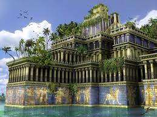

BABILONSKI VISEČI VRTOVI 🏛️🌿⛲
Babilonski viseči vrtovi so eno od sedmih čudes antičnega sveta in edino, katerega lokacija še ni bila dokončno dokazana.
KJE SO BILI ZGRAJENI?
Navadno pravijo, da so bili zgrajeni v starodavnem mestu Babilon, v bližini današnjega Hillah, provinca Babil v Iraku. Ni veljavnega babilonskega besedila, ki bi omenjalo vrtove in nobenih dokončnih arheoloških dokazov, da je bilo to v Babilonu.
LEGENDA
Ena legenda pravi, da je viseče vrtove Babilona ustvaril cesar Nebukadnezar II., babilonski kralj, za svojo perzijsko ženo, kraljico Amytis, da bi pozabila na zelene hribe in doline domovine.
Zaradi pomanjkanja dokazov je bilo predlagano, da so viseči vrtovi zgolj legendarni in jih najdemo v starih grških in rimskih zapisih piscev Strabona, Diodor Sicilskega in Quintus Curtiusov Rufusa. Ti opisi predstavljajo romantični ideal Vzhodnega rajskega vrta. Če so zares obstajali, so bili uničeni nekje po prvem stoletju našega štetja.
